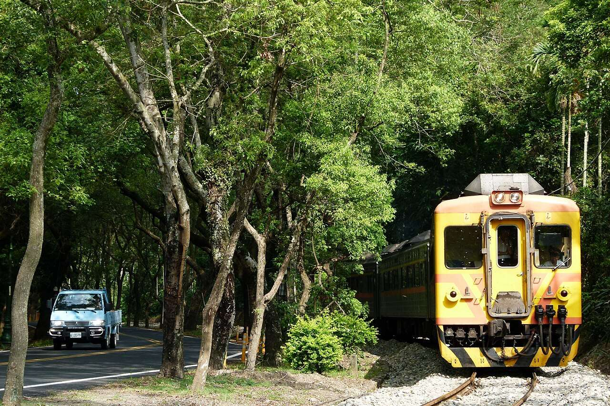

展區一
綠色隧道：用雙腳讀一首詩
清晨的陽光從樟樹葉縫灑下來，鳥叫聲、蟲鳴聲伴著您的腳步。偶爾，集集線的小火車從身旁經過。這是一條適合慢慢走的路。
認識綠色隧道
- 在哪裡南投名間鄉與集集鎮之間，沿著 152 縣道，和集集線鐵道平行。
- 有多長約 4.5 公里。
- 老樟樹兩側樟樹樹齡超過 50 年，枝葉交織成拱形。
- 怎麼去搭火車到集集車站，附近租腳踏車，約 20 分鐘就能到。
- 更長的路線集集環鎮自行車道暨綠色隧道全長 17.52 公里，沿途有上千棵老樟樹。
- 新消息集集線已在 2026 年 6 月 25 日恢復全線通車。

【待查證】綠色隧道長度有「4.5 公里」與「5.6 公里」兩種說法，可能計算範圍不同。本站採用較新的「約 4.5 公里」，請組員查證後在參考資料頁說明。
慢行路線：一站一站讀下去
點一下每一站，看看那裡有什麼。（站點順序依報導整理，距離請組員實地確認）
-
檜木站房與除役的蒸汽火車頭。附近可以租腳踏車，先上廁所、補充水分再出發。
-
往西走，會經過日治時期留下的磚窯，高高的煙囪很好認。
-
穿過被綠蔭包圍的集集隧道，就快到綠色隧道了。隧道內請注意來車。
-
老樟樹夾道成蔭的起點。放慢腳步，抬頭看看樹葉間灑下的陽光。
-
路旁有低矮的涼亭可以坐下休息，聽聽鳥叫和蟲鳴。
-
鐵道與馬路平行，有機會看到小火車從綠隧旁經過；走累了可以搭火車回集集。
-
「綠色隧道」入口意象，是這趟慢行的終點。
走一走，算一算
老樟樹的心聲
老樟樹也會累。道路拓寬鋪了柏油、鐵路限縮了根系，樹根沒地方伸展，樹慢慢往路中間傾斜，生命力也一年年衰退。
樹醫師提醒：颱風天或豪大雨時，最好不要進入綠色隧道。
我們可以做的事
- 走路、騎車取代開車
- 不踩樹根、不在樹幹上綁東西
- 不亂丟垃圾，把綠隧乾乾淨淨留給下一代

我們的步行紀錄
請組員實際走一段綠色隧道，記錄：走了多少步、花了多久、看到什麼聽到什麼，附 2–3 張自己拍的照片。